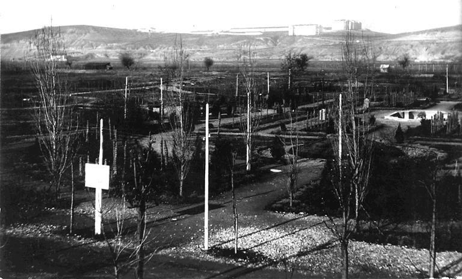
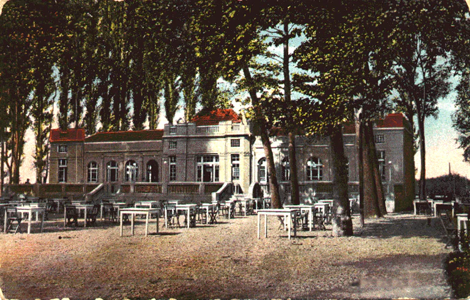
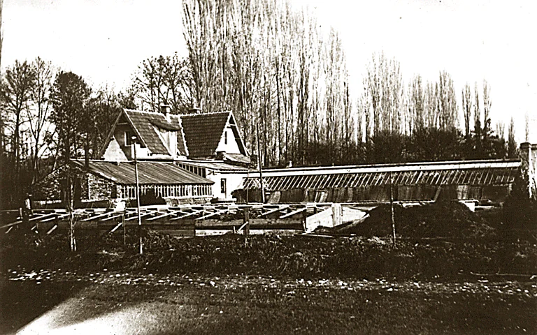
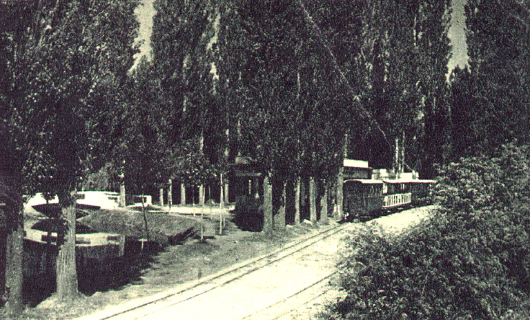

Park
Film Haberleri no. 25
- Çeken
- Kočo Nedkov
- Asistan
- P. Stefanovski
- Yıl
- 1951
- Süre
- 00:33

Meydanın yakınında, eski postane ve bankanın arkasındaki Varoški Parkı - 1930 civarı.
Şehir parkı - 1920 civarı

Üsküp'te şehir parkı - çeşme. Levhada şöyle yazıyor: "Parka arabayla girmek, köpek getirmek, bisiklete binmek, yollarda yürümek, çiçek koparmak ya da çocukları refakatsiz bırakmak yasaktır" - 1920 civarı.

Üsküp şehir parkındaki çeşme.

Kışın şehir parkındaki çeşme. Arka planda Üsküp Kalesi var - 1920 civarı.

Şehir parkının bir bölümü - 1920 civarı.

Islahane Parkı - 1920'ler.

İdadiye parkındaki lokanta - bugünkü şehir parkının bir bölümü (1920 civarı)

İdadiye parkındaki lokanta - bugünkü şehir parkının bir bölümü (1920 civarı)

Şehir parkının bir bölümü - 1920 civarı.

Şehir parkının bir bölümü - 1920 civarı.

Şehir parkının bir bölümü ve "Öncü köprüsü" denen küçük köprü. (1920'ler)

Film Haberleri no. 25
 Su kemeri4 kartpostal
Su kemeri4 kartpostal Kale30 kartpostal
Kale30 kartpostal Köprüler60 kartpostal
Köprüler60 kartpostal Rıhtım58 kartpostal
Rıhtım58 kartpostal Meydan46 kartpostal
Meydan46 kartpostal Binalar66 kartpostal
Binalar66 kartpostal Hristiyan kiliseleri19 kartpostal
Hristiyan kiliseleri19 kartpostal İslami yapılar33 kartpostal
İslami yapılar33 kartpostal Subaylar Evi29 kartpostal
Subaylar Evi29 kartpostal Tiyatro28 kartpostal
Tiyatro28 kartpostal Tren garı13 kartpostal
Tren garı13 kartpostal Okullar36 kartpostal
Okullar36 kartpostal Parklar12 kartpostal
Parklar12 kartpostal Pazarlar18 kartpostal
Pazarlar18 kartpostal Sokaklar38 kartpostal
Sokaklar38 kartpostal Panorama I60 kartpostal
Panorama I60 kartpostal Panorama II30 kartpostal
Panorama II30 kartpostal Kolajlar55 kartpostal
Kolajlar55 kartpostal Seller9 kartpostal
Seller9 kartpostal Deprem27 kartpostal
Deprem27 kartpostal Üsküp 200026 kartpostal
Üsküp 200026 kartpostal